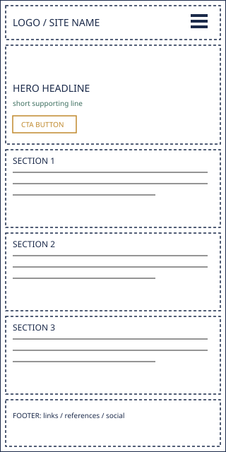
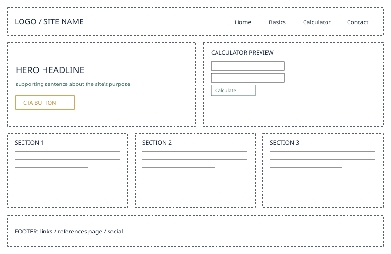

Site Name
The First Paycheck
The name speaks directly to the audience: people who have just started earning a real income and are figuring out what to do with it for the first time. It is specific and memorable rather than a generic term like “finance tips,” and it signals the exact life stage the content is written for.
Optional domain availability: firstpaycheck.co
Site Purpose
The site provides practical, jargon-free guidance on budgeting, saving, and debt for early-career professionals, along with an interactive budget calculator that turns a visitor's own income and expenses into a plan they can act on immediately.
Scenarios
- I just got my first full paycheck and don’t know where to start — how do I build a budget that actually holds up?
- My friends keep talking about “good debt” versus “bad debt” — what does that actually mean for me?
- How much of my paycheck should go toward savings before I even think about investing?
Color Schema
The palette borrows from the look of a paper ledger: a warm, neutral background with ink-dark headings, so the site feels grounded and trustworthy rather than like a flashy banking app.
#1B2A4A — Ink Navy
headings, header/footer background
#FBF7F0 — Ledger Cream
page background
#C08A2E — Amber Gold
buttons, section dividers, hover states
#3B6E5E — Ledger Green
links, calculator accents, focus outlines
#2B2B2B — Charcoal
body text
Typography
Three fonts, each with one clear job: a serif for character in headings, a clean sans for readable body copy, and a monospace face for numbers, since a finance site lives or dies on how trustworthy its figures look.
Fraunces — headings
Build a budget that survives payday week two.
Inter — body text, navigation, buttons
Most budgets fail in the first month, not because the plan is wrong, but because it never accounted for the ordinary, boring expenses that show up every week.
IBM Plex Mono — calculator output, dollar amounts, data
Monthly leftover: $184.50
Wireframes
Home page layout for mobile and desktop viewports.

